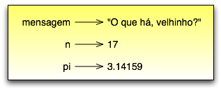

Tópicos
O valor (por exemplo, letras e números) é uma das coisas fundamentais que um programa manipula. Os valores que já vimos até agora foram o 2 (como resultado, quando adicionamos 1 + 1) e "Alô, Mundo!".
Esses valores pertencem a tipos diferentes: 2 é um inteiro, e "Alô, Mundo!" é uma string, assim chamada porque “string”, em inglês, quer dizer sequência, série, cadeia (de caracteres), ou neste caso, “série de letras”. Você (e o interpretador) consegue identificar strings porque elas aparecem entre aspas.
O comando print também funciona com inteiros:
>>> print 4
4
Se você estiver em dúvida sobre qual é o tipo de um determinado valor, o interpretador pode revelar:
>>> type("Alô, Mundo!")
<type 'string'>
>>> type(17)
<type 'int'>
Nenhuma surpresa: strings pertencem ao tipo string e inteiros pertencem ao tipo int. Menos obviamente, números com um ponto decimal pertencem a um tipo chamado float, porque estes números são representados em um formato chamado ponto flutuante [1]:
>>> type(3.2)
<type 'float'>
| [1] | N.T.: Observe o uso de ponto no lugar da vírgula para separar a parte inteira da parte fracionária. |
O que dizer de valores como "17" e "3.2"? Eles parecem números, mas estão entre aspas, como strings:
>>> type("17")
<type 'string'>
>>> type("3.2")
<type 'string'>
Eles são strings.
Ao digitar um número grande, é tentador usar pontos entre grupos de três dígitos, assim: 1.000.000. Isso não funciona por que Python usa o ponto como separador decimal. Usar a vírgula, como se faz em inglês, resulta numa expressão válida, mas não no número que queríamos representar:
>>> print 1,000,000
1 0 0
Não é nada do que se esperava! Python interpreta 1,000,000 como uma tupla, algo que veremos no Capítulo 9. Por hora, lembre-se apenas de não colocar vírgulas nos números.
Uma das características mais poderosas de uma linguagem de programação é a habilidade de manipular variáveis. Uma variável é um nome que se refere a um valor.
O comando de atribuição cria novas variáveis e dá a elas valores:
>>> mensagem = "E aí, Doutor?"
>>> n = 17
>>> pi = 3.14159
Este exemplo faz três atribuições. A primeira atribui a string "E aí, Doutor?" a uma nova variável chamada mensagem. A segunda dá o valor inteiro 17 a n, e a terceira atribui o número de ponto flutuante 3.14159 à variável chamada pi.
Uma maneira comum de representar variáveis no papel é escrever o nome delas com uma seta apontando para o valor da variável. Esse tipo de figura é chamado de diagrama de estado porque mostra em que estado cada variável está (pense nisso como o estado de espírito da variável). O diagrama a seguir mostra o resultado das instruções de atribuição:
O comando print também funciona com variáveis:
>>> print mensagem
E aí, Doutor?
>>> print n
17
>>> print pi
3.14159
Em cada um dos casos, o resultado é o valor da variável. Variáveis também têm tipo. Novamente, podemos perguntar ao interpretador quais são eles:
>>> type(mensagem)
<type 'string'>
>>> type(n)
<type 'int'>
>>> type(pi)
<type 'float'>
O tipo de uma variável é o tipo do valor ao qual ela se refere.
Os programadores geralmente escolhem nomes significativos para suas variáveis, pois os nomes documentam para o que a variável é usada.
Nomes de variáveis podem ser arbitrariamente longos. Eles podem conter tanto letras quanto números, mas têm de começar com uma letra. Embora seja válida a utilização de letras maiúsculas, por convenção, não usamos. Se você o fizer, lembre-se de que maiúsculas e minúsculas são diferentes. Bruno e bruno são variáveis diferentes.
O caractere para sublinhado ( _ ) pode aparecer em um nome. Ele é muito utilizado em nomes com múltiplas palavras, tal como em meu_nome ou preco_do_cha_na_china.
Se você der a uma variável um nome inválido, causará um erro de sintaxe:
>>> 76trombones = "grande parada"
SyntaxError: invalid syntax
>>> muito$ = 1000000
SyntaxError: invalid syntax
>>> class = "Ciencias da Computacao 101"
SyntaxError: invalid syntax
76trombones é inválida por não começar com uma letra. muito$ é inválida por conter um caractere ilegal, o cifrão. Mas o que está errado com class?
Ocorre que class é uma das palavras reservadas em Python. Palavras reservadas definem as regras e a estrutura da linguagem e não podem ser usadas como nomes de variáveis.
Python tem 29 palavras reservadas:
and def exec if not return
assert del finally import or try
break elif for in pass while
class else from is print yield
continue except global lambda raise
Pode ser útil ter essa lista à mão [2]. Se o interpretador acusar erro sobre um de seus nomes de variável e você não souber o porquê, veja se o nome está na lista.
| [2] | N.T.: esta lista pode ser obtida através do próprio interpretador Python, com apenas dois comandos: import keyword
print keyword.kwlist
|
Um comando é uma instrução que o interpretador Python pode executar. Vimos até agora dois tipos de comandos: de exibição (print) e de atribuição.
Quando você digita um comando na linha de comando, o Python o executa e mostra o resultado, se houver um. O resultado de um comando print é a exibição de um valor. Comandos de atribuição não produzem um resultado visível.
Um script normalmente contém uma sequência de comandos. Se houver mais de um comando, os resultados aparecerão um de cada vez, conforme cada comando seja executado.
Por exemplo, o “script”:
print 1
x = 2
print 2
produz a saída:
1
2
Lembrando que o comando de atribuição não produz saída.
Uma expressão é uma combinação de valores, variáveis e operadores. Se você digitar uma expressão na linha de comando, o interpretador avalia e exibe o resultado:
>>> 1 + 1
2
Embora expressões contenham valores, variáveis e operadores, nem toda expressão contém todos estes elementos. Um valor por si só é considerado uma expressão, do mesmo modo que uma variável:
>>> 17
17
>>> x
2
Avaliar uma expressão não é exatamente a mesma coisa que imprimir um valor:
>>> mensagem = "E aí, Doutor?"
>>> mensagem
'E aí, Doutor?'
>>> print mensagem
E aí, Doutor?
Quando Python exibe o valor de uma expressão, usa o mesmo formato que você usaria para entrar com o valor. No caso de strings, isso significa que as aspas são incluídas [3]. Mas o comando print imprime o valor da expressão, que, neste caso, é o conteúdo da string.
| [3] | N.T.: Python aceita aspas simples ou duplas para delimitar strings. |
Num script, uma expressão sozinha é um comando válido, porém sem efeito. O script:
17
3.2
"Alô, Mundo!"
1 + 1
não produz qualquer saída. Como você mudaria o “script” para exibir os valores destas quatro expressões?
Operadores são símbolos especiais que representam computações como adição e multiplicação. Os valores que o operador usa são chamados operandos.
Todas as expressões seguintes são válidas em Python e seus significados são mais ou menos claros:
20+32 hora-1 hora*60+minuto minuto/60 5**2 (5+9)*(15-7)
Em Python, os símbolos +, -, / e o uso de parênteses para agrupamento têm o mesmo significado que em matemática. O asterisco (*) é o símbolo para multiplicação e ** é o símbolo para potenciação.
Quando um nome de variável aparece no lugar de um operando, ele é substituído pelo valor da variável, antes da operação ser executada.
Adição, subtração, multiplicação e potenciação fazem o que se espera, mas você pode ficar surpreso com a divisão. A operação seguinte tem um resultado inesperado:
>>> minuto = 59
>>> minuto/60
0
O valor de minuto é 59 e, em aritmética convencional, 59 dividido por 60 é 0,98333, não 0. A razão para a discrepância é que Python está realizando uma divisão inteira.
Quando ambos os operandos são inteiros, o resultado tem de ser também um inteiro e, por convenção, a divisão inteira sempre arredonda para baixo, mesmo em casos como este, em que o inteiro seguinte está muito próximo:
>>> minuto*100/60
98
De novo, o resultado é arredondado para baixo, mas agora pelo menos a resposta é aproximadamente correta. A alternativa é usar a divisão em ponto flutuante, o que veremos no capítulo 3.
Quando mais de um operador aparece em uma expressão, a ordem de avaliação depende das regras de precedência. Python segue as mesmas regras de precedência para seus operadores matemáticos que a matemática. O acrônimo PEMDAS é uma maneira prática de lembrar a ordem das operações:
De maneira geral, você não pode executar operações matemáticas em strings, ainda que as strings se pareçam com números. O que segue é inválido (assumindo que mensagem é do tipo string):
mensagem-1 "Alô"/123 mensagem*"Alô" "15"+2
Interessante é o operador +, que funciona com strings, embora ele não faça exatamente o que você poderia esperar. Para strings, o operador + representa concatenação, que significa juntar os dois operandos ligando-os pelos extremos. Por exemplo:
fruta = "banana"
assada = " com canela"
print fruta + assada
A saída deste programa é banana com canela. O espaço antes da palavra com é parte da string e é necessário para produzir o espaço entre as strings concatenadas.
O operador * também funciona com strings; ele realiza repetição. Por exemplo, "Legal"*3 é "LegalLegaLegal". Um dos operadores tem que ser uma string; o outro tem que ser um inteiro.
Por um lado, esta interpretação de + e * faz sentido pela analogia entre adição e multiplicação. Assim como 4*3 equivale a 4+4+4, não é de estranhar que "Legal"*3 seja o mesmo que "Legal"+"Legal"+"Legal". Por outro lado, uma diferença significativa separa concatenação e repetição de adição e multiplicação. Você saberia mencionar uma propriedade da adição e da multiplicação que não ocorre na concatenação e na repetição?
Até agora, vimos os elementos de um programa (variáveis, expressões, e instruções ou comandos) isoladamente, sem mencionar como combiná-los.
Uma das características mais práticas das linguagens de programação é a possibilidade de pegar pequenos blocos e combiná-los numa composição. Por exemplo, nós sabemos como somar números e sabemos como exibi-los; acontece que podemos fazer as duas coisas ao mesmo tempo:
>>> print 17 + 3
20
Na realidade, a soma tem que acontecer antes da impressão, assim, as ações não estão na realidade acontecendo ao mesmo tempo. O ponto é que qualquer expressão envolvendo números, strings, e variáveis pode ser usada dentro de um comando print. Você já tinha visto um exemplo disto:
print "Número de minutos desde a meia-noite: ", hora*60+minuto
Esta possibilidade pode não parecer muito impressionante agora, mas você verá outros exemplos em que a composição torna possível expressar cálculos e tarefas complexas de modo limpo e conciso.
Atenção: Existem limites quanto ao lugar onde você pode usar certos tipos de expressão. Por exemplo, o lado esquerdo de um comando de atribuição tem que ser um nome de variável, e não uma expressão. Assim, o seguinte não é válido: minuto+1 = hora.